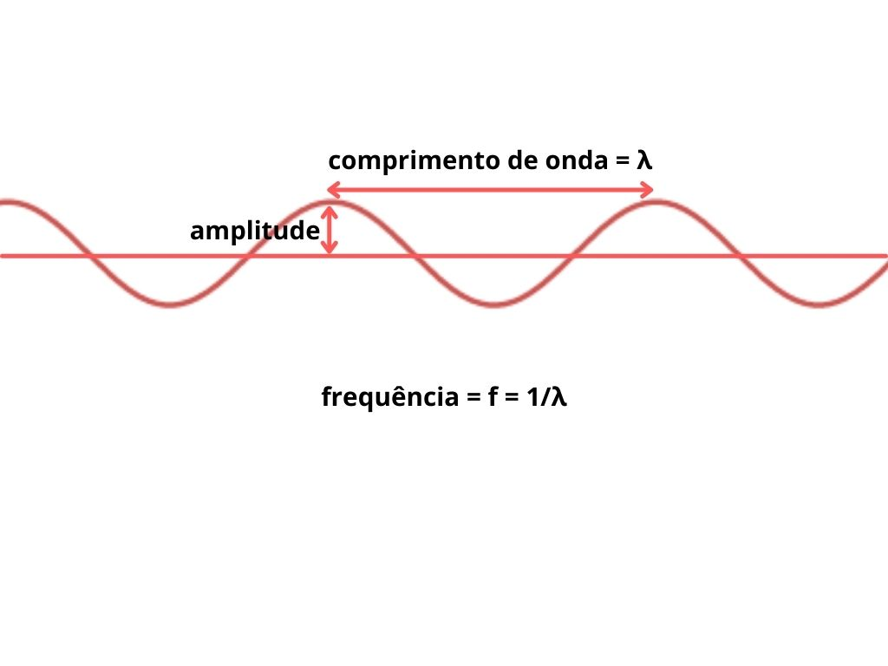

Mecânica Quântica 1
Dualidade onda-partícula, origens experimentais, e equação de Schrodinger
Sejam bem-vindos e bem-vindas!!! Hoje é um dia maravilhoso pois estaremos (finalmente) aprendendo sobre mecânica quântica!
Ok, vamos começar com alguns “disclaimers”: primeiro, saibam que uma série de três posts sobre mecânica quântica não é, de maneira alguma, o suficiente para aprender tudo o que há a aprender sobre o tópico, e nem mesmo o suficiente para arranhar a superfície. No entanto, esperem ter uma introdução divertida e aprender o mínimo necessário para aplicar o conhecimento na computação quântica.
Segundo, sinto que devo lembrá-los que não estou assumindo nenhum conhecimento prévio sobre este ramo da física, e também não assumo nenhuma proficiência com matemática além de álgebra linear. Assim, muitos tópicos aqui podem ser aprofundados caso tenha conhecimento de cálculo e equações diferenciais. Se este é seu caso, não se preocupe: recomendarei recursos mais avançados conforme avançarmos no post.
Por fim, vou pedir que você leia este post com a mente aberta. A mecânica quântica tem uma certa reputação como “estranha”, “aleatória” ou até “incompreensível”. Esqueça de todos esses rótulos!!! Apenas leia isso sabendo que a mecânica quântica traz sim algumas noções bastante diferentes daquelas na física clássica, e por isso pode parecer estranha. No entanto, é apenas uma questão de costume. Ela não é, de maneira alguma, incompreensível. Você consegue!
Bom, dito tudo isso, vamos começar nossa jornada de hoje!!!
Introdução - o que a mecânica quântica descreve?
O que é, então, a tal da mecânica quântica? Pra que ela serve? O que ela descreve? Por que você deveria se importar?
Comecemos pela primeira pergunta. A mecânica quântica nada mais é que um ramo da física. Assim como aprendemos, no Ensino Médio, sobre mecânica de Newton (clássica), termodinâmica, óptica, e eletromagnetismo, agora vamos aprender sobre uma nova área, a mecânica quântica. A partir de agora, vamos nos referir a tudo que não é quântico como sendo clássico, como, por exemplo, a mecânica de Newton (lembra de F=ma?).
Agora, quanto a sua utilidade: para que é que ela serve? Bom, obviamente que serve para computação quântica (caso contrário, não estaríamos falando sobre ela). Mas a mecânica quântica é também utilizada em smartphones e computadores modernos, na ressonância magnética, em lasers e telecomunicações, e em relógios atômicos e no GPS. Assim, não há muita dúvida sobre sua utilidade.
Bom, sabemos que a termodinâmica descreve calor e energia, e óptica descreve a luz, mas o que a mecânica quântica descreve? Basicamente, corpos pequenos. Com pequenos quero dizer coisas como elétrons e fótons, que são partículas fundamentais na natureza, menores que um átomo. Não é como se outros corpos não obedecessem a mecânica quântica, mas quanto maior o corpo mais difícil ver os efeitos quânticos vindo das partes pequenas que o compõem. Assim, uma pessoa ou um carro é melhor aproximado pelas leis da física clássica, mesmo que sejam compostos de elétrons e quarks que por sua vez formam átomos e então moléculas.
Ok, e por que exatamente você deveria se importar? Se você está aqui é porque quer aprender sobre computação quântica, e isso nada mais é que a ideia de utilizar as leis e propriedades surgindo da mecânica quântica para criar computadores mais efetivos para certos tipos de tarefas. Alguns podem argumentar que é possível fazer computação quântica sem aprender mecânica quântica. Pode até ser, mas ter noção das leis e propriedades que você tem em suas mãos ao programar quanticamente te ajudará bastante.
Mais especificamente, na computação quântica, queremos tirar proveito de três fenômenos quânticos, dois dos quais aprenderemos hoje: interferência quântica, superposição, e emaranhamento. Guarde essa informação! O entendimento desses três termos deve ser seu principal objetivo pelos próximos três posts.
Luz, experimento de dupla fenda e efeito fotoelétrico
Antes da mecânica quântica ser descoberta, a noção predominante era a de que partículas têm uma posição definida, são “discretas” (vêm em unidades) e ricocheteiam quando colidem umas com as outras.
Já as ondas não têm uma posição definida, são contínuas (não há unidades) e interferem umas com as outras ao “colidir”. Para quem não lembra o que é interferência de ondas, pense nisso como sendo a capacidade de ondas de se somarem ou se destruírem:


Também vale a pena lembrar de algumas características de ondas: o comprimento de onda, a frequência, e a amplitude:
Um dos debates mais longos da física, então, foi: a luz é feita de ondas, ou de partículas?
Por algum tempo, foi aceito que a luz era feita de ondas. O motivo, é claro, vinha de evidência experimental. Mais especificamente, do experimento de dupla fenda. Imagine que você tem uma parede com duas fendas paralelas, super finas. Você então deixa luz passar por tais fendas, possivelmente vinda de um laser. Atrás da parede, você coloca algo que te permita ver a luz resultante. O resultado é um padrão de interferência: exatamente o que seria esperado de uma onda, que se divide ao passar em cada fenda e então interfere consigo mesma.

Tudo parecia decidido e o debate parecia acabado, até que foi observado o efeito fotoelétrico. Imagine agora um átomo, composto de um núcleo e de uma eletrosfera. Os elétrons se mantém ao redor do núcleo devido a uma atração elétrica, que podemos tentar vencer com energia (mais ou menos como você consegue vencer a atração de dois ímãs se fizer força o suficiente, com a diferença de que átomos são pequenos demais para tentar separar com sua mão).
Bom, se energia é o que precisamos, podemos usar luz! Afinal, dissemos que luz é uma onda e ondas carregam energia. Mas quando tentamos ejetar elétrons com luz de baixa energia, não conseguimos nenhum, não importa quanta luz usemos. Em compensação, conseguimos tirar elétrons com luz de alta energia.
Isso não faz sentido! Se a luz realmente é feita de ondas, então deveríamos conseguir, eventualmente, tirar elétrons de um átomo com luz de baixa energia, pois a luz é contínua e a energia eventualmente se somaria e se tornaria o suficiente.
Mas e se a luz fosse feita de partículas? Então, este resultado faria sentido: tentar tirar elétrons de um átomo com luz de baixa energia seria como tentar derrubar pinos de boliche com bolas de pingue-pongue; não importa quantas usasse, uma seguida da outra, as energias não iriam “se somar” e nunca funcionaria.
Agora, temos uma evidência de que a luz é feita de ondas, e outra evidência de que a luz é feita de partículas. O que está acontecendo??
A dualidade onda-partícula e o comprimento de onda de De Broglie
Calma! Tá tudo certo. O que acontece é que acabamos de descobrir a dualidade onda-partícula! Na mecânica quântica, objetos podem ser descritos como partículas E como ondas ao mesmo tempo!
Isso nos parece contra-intuitivo, mas perceba que partículas e ondas são só grupos de objetos que decidimos nomear desta maneira de acordo com algumas características. Tudo o que estamos dizendo agora é que descobrimos alguns objetos que têm características de ambos os grupos.
Acabamos de ver um exemplo de algo que achamos ser composto de ondas, mas que também se comporta como partículas. Vejamos como o contrário pode ocorrer. Se voltamos a realizar nosso experimento de dupla fenda, mas trocamos o laser de luz por uma fonte de elétrons, vemos de novo um padrão de interferência! Perceba que para observar esse resultado é necessário ter uma tela especial que detecte elétrons atrás da dupla fenda.
Bom, se você já teve tempo o suficiente para aceitar essa dualidade da natureza (fique à vontade para tirar mais alguns minutos), você deve estar se perguntando como descobrimos as características de ondas das partículas. Como sabemos, por exemplo, qual o comprimento de onda de um elétron? Se ele se comporta como uma onda, precisa ter um comprimento de onda!
A resposta para essa pergunta está no comprimento de onda de De Broglie. Todas as partículas têm um comprimento de onda que pode ser calculado usando
λ = h/(mv) = h/p
Note também que quanto maior o comprimento de onda, mais comportamento de ondas é observado. Mas além do comprimento de onda, outra questão surge: se partículas podem se comportar como ondas, e até interferir umas com as outras, o que aconteceu com a noção de que elas têm uma posição definida?
Função de onda e equação de Schrodinger
A partir de agora, vamos dizer que toda partícula é descrita por uma “função de onda”. O comprimento de onda que calculamos é o comprimento dessa onda. Mas mais que isso, a função de onda nos dará informação sobre a posição da nossa partícula.
O tipo de informação que conseguimos não é o mais satisfatório… tudo o que conseguimos saber é a probabilidade de que uma partícula esteja em alguma posição a qualquer momento. Sei que essa é uma das partes mais difíceis de entender da mecânica quântica - como assim a probabilidade? Quer dizer que não temos informação o suficiente, é um defeito da teoria? Não! Quer dizer que é fisicamente impossível saber mais que isso. Como veremos, em alguns casos a probabilidade em alguma posição será de 100% e então teremos certeza de onde se encontra a partícula, mas em todos os outros casos não se trata de uma falha na teoria - se trata de uma característica da natureza.
A função de onda nos retorna uma probabilidade para cada posição e momento. Assim, depende de x e de t:
ψ(x,t)
Também a representamos como um vetor (não se preocupe com os detalhes de como transformar uma função em um vetor; se tiver interesse, acesse, de graça, o curso “Quantum Mechanics for Scientists and Engineers 1” na edX, e procure o vídeo sobre o tópico na seção de “background mathematics” - deixaria o link aqui mas meu acesso ao curso expirou):
ψ(x,t) = |ψ⟩
Para entender porque concluímos isso sobre a onda que representa a partícula, precisaríamos de muito mais tempo e matemática. Por enquanto, confie no que digo (se não confiar pode pesquisar). Basta saber que os experimentos que realizamos com elétrons e outras partículas condizem com essa ideia.
As posições mais prováveis para uma dada partícula são aquelas nas quais a onda se encontra com a maior amplitude:

Vamos mudar um pouco de assunto e falar sobre energia. Ondas carregam energia, e estamos lidando com objetos que se comportam um pouco como ondas. No entanto, lembrem-se que também se comportam um pouco como partículas. Assim, nossos estados quânticos carregam energia, mas nem toda energia é permitida. A energia vem em “quanta”, pequenos pacotes. Dizemos que é quantizada, discreta como partículas (que vêm em unidades, como vimos). É daí que vem o termo mecânica quântica!
Ok, e como descobrimos quais energias são permitidas? Usamos algo chamado o operador Hamiltoniano, ou apenas Hamiltoniano. Trata-se de um operador quântico que, quando aplicado ao nosso estado, nos informa sua energia. Matematicamente,
H|ψ⟩ = E|ψ⟩
Essa equação é o que chamamos de uma equação de autovalor. Basicamente, estamos dizendo que o operador Hamiltoniano, uma matriz, multiplicado por nosso estado quântico, um vetor, resulta em um escalar, a energia, vezes esse mesmo estado quântico. Pode existir mais de um resultado, e pode não existir nenhum. Para uma solução psi_0, E_0, dizemos que psi_0 é autovetor de H, e E_0 é o autovalor.
As possíveis soluções para E são as energias permitidas.
Para que essa equação funcione, precisamos que o Hamiltoniano capture as várias formas através das quais um estado quântico pode ter energia. Teremos
H = p²/(2m) + V(x)
Veja que o primeiro termo, aplicado a um estado quântico, nos informa sua energia cinética, enquanto que o segundo termo engloba toda forma de energia potencial que pode ter (é uma função de x, pois energia potencial é energia devido a posição).
Por fim, precisamos de uma ferramenta para descrever a mudança dos estados quânticos. Para isso, utilizamos a equação de Schrodinger:

Se você não sabe cálculo, basta saber que d/dt nos dá a taxa de mudança de algum valor (neste caso, psi). Não vamos precisar explicitamente resolver essa equação, que é uma equação diferencial parcial, mas é bom saber que ela existe e para que serve. Se quiser saber mais, veja os recursos recomendados na próxima sessão.
Recursos de aprofundamento
Para aqueles(as) que querem entender melhor a mecânica quântica, incluindo toda a matemática mais avançada, deixo a seguir uma lista de recursos que utilizei e considerei de maior ajuda. Marquei com um asterisco os recursos que exigem conhecimento de cálculo.
- Quantum Mechanics and Path Integrals, Feynman e Hibbs, capítulo 1
- Quantum Mechanics and Path Integrals, Feynman e Hibbs, capítulos 2 a 5*
- Quantum Computation and Quantum Information, Nielsen e Chuang, capítulo 1 parte 2
- Quantum Mechanics for Everyone, curso no edX
- Quantum Mechanics for Scientists and Engineers 1, curso no edX*
- Learn Quantum Mechanics (jogos de aprendizado)
- Quantum Mechanics, Theoretical Minimum
- Feynman Lectures in Physics Volume 3, capítulos 1 a 16 (mas vale a pena ver todos)